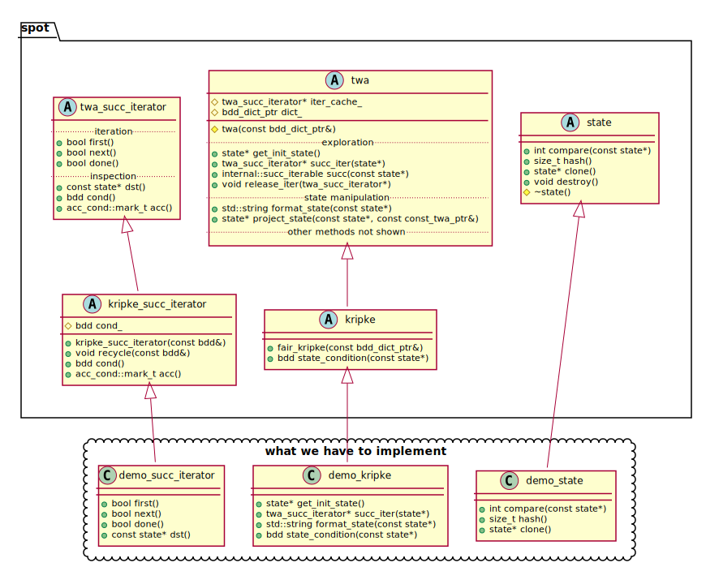
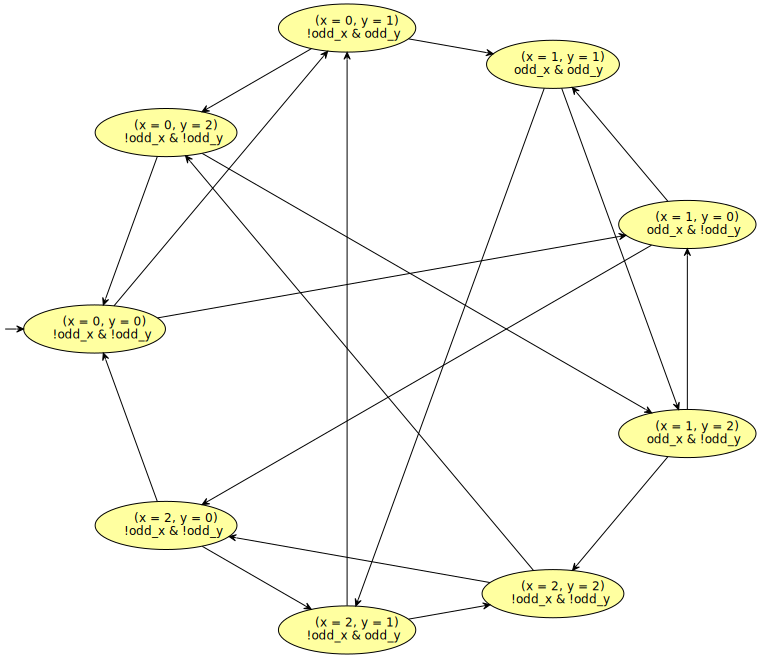
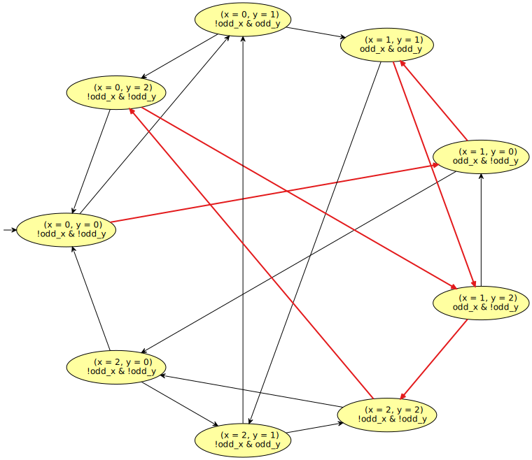

Implementing an on-the-fly Kripke structure
Table of Contents
Kripke structures, can be defined as ω-automata in which labels are on
states, and where all runs are accepting (i.e., the acceptance
condition is t). They are typically used by model checkers to
represent the state space of the model to verify.
Implementing a toy Kripke structure
In this example, our goal is to implement a Kripke structure that constructs its state space on the fly. The states of our toy model will consist of a pair of modulo-3 integers \((x,y)\); and at any state the possible actions will be to increment any one of the two integer (nondeterministicaly). That increment is obviously done modulo 3. For instance state \((1,2)\) has two possible successors:
- \((2,2)\) if
xwas incremented, or - \((1,0)\) if
ywas incremented.
Initially both variables will be 0. The complete state space is expected to have 9 states. But even if it is small because it is a toy example, we do not want to precompute it. It should be computed as needed, using the one-the-fly interface previously discussed.
In addition, we would like to label each state by atomic propositions
odd_x and odd_y that are true only when the corresponding
variables are odd. Using such variables, we could try to verify
whether if odd_x infinitely often holds, then odd_y infinitely
often holds as well.
What needs to be done
In Spot, Kripke structures are implemented as subclass of twa, but
some operations have specialized versions that takes advantages of the
state-labeled nature of Kripke structure. For instance the on-the-fly
product of a Kripke structure with a twa is slightly more efficient
than the on-the-fly product of two twa.
#include <spot/kripke/kripke.hh>
The kripke/kripke.hh header defines an abstract kripke class that
is a subclass of twa, and a kripke_succ_iterator that is a subclass
of twa_succ_iterator. Both class defines some of the methods of
the twa interface that are common to all Kripke structure, leaving
us with a handful of methods to implement.
The following class diagram is a simplified picture of the reality, but good enough for show what we have to implement.

Implementing the state subclass
Let us start with the demo_state class. It should
- store the values of
xandy, and provide access to them, - have a
clone()function to duplicate the state, - have a
hash()method that returns asize_tvalue usable as hash key, - have a
compare()function that returns an integer less than, equal to, or greater than zero ifthisis found to be less than, equal to, or greater than the other state according to some total order we are free to choose.
Since our state space is so trivial, we could use (x<<2) + y as a
perfect hash function, which implies that in this case we can also
implement compare() using hash().
class demo_state: public spot::state { private: unsigned char x_; unsigned char y_; public: demo_state(unsigned char x = 0, unsigned char y = 0) : x_(x % 3), y_(y % 3) { } unsigned get_x() const { return x_; } unsigned get_y() const { return y_; } demo_state* clone() const override { return new demo_state(x_, y_); } size_t hash() const override { return (x_ << 2) + y_; } int compare(const spot::state* other) const override { auto o = static_cast<const demo_state*>(other); size_t oh = o->hash(); size_t h = hash(); if (h < oh) return -1; else return h > oh; } };
Note that a state does not know how to print itself, this a job for the automaton.
Implementing the kripke_succ_iterator subclass
Now let us implement the iterator. It will be constructed from a pair
\((x,y)\) and during its iteration it should produce two new states
\((x+1,y)\) and \((x,y+1)\). We do not have to deal with the modulo
operation, as that is done by the demo_state constructor. Since
this is an iterator, we also need to remember the position of the
iterator: this position can take 3 values:
- when
pos=2then the successor is \((x+1,y)\) - when
pos=1then the successor is \((x,y+1)\) - when
pos=0the iteration is over.
We decided to use pos=0 as the last value, as testing for 0 is
easier and will occur frequently.
When need to implement the iteration methods first(), next(), and
done(), as well as the dst() method. The other cond() and
acc() methods are already implemented in the kripke_succ_iterator,
but that guy needs to know what condition cond labels the state.
We also add a recycle() method that we will discuss later.
class demo_succ_iterator: public spot::kripke_succ_iterator { private: unsigned char x_; unsigned char y_; unsigned char pos_; public: demo_succ_iterator(unsigned char x, unsigned char y, bdd cond) : kripke_succ_iterator(cond), x_(x), y_(y) { } bool first() override { pos_ = 2; return true; // There exists a successor. } bool next() override { --pos_; return pos_ > 0; // More successors? } bool done() const override { return pos_ == 0; } demo_state* dst() const override { return new demo_state(x_ + (pos_ == 2), y_ + (pos_ == 1)); } void recycle(unsigned char x, unsigned char y, bdd cond) { x_ = x; y_ = y; spot::kripke_succ_iterator::recycle(cond); } };
Implementing the kripke subclass itself
Finally, let us implement the Kripke structure itself. We only have four methods of the interface to implement:
get_init_state()should return the initial state,succ_iter(s)should build ademo_succ_iteratorfor edges leavings,state_condition(s)should return the label ofs,format_state(s)should return a textual representation of the state for display.
In addition, we need to declare the two atomic propositions odd_x
and odd_y we wanted to use.
class demo_kripke: public spot::kripke { private: bdd odd_x_; bdd odd_y_; public: demo_kripke(const spot::bdd_dict_ptr& d) : spot::kripke(d) { odd_x_ = bdd_ithvar(register_ap("odd_x")); odd_y_ = bdd_ithvar(register_ap("odd_y")); } demo_state* get_init_state() const override { return new demo_state(); } // To be defined later. demo_succ_iterator* succ_iter(const spot::state* s) const override; bdd state_condition(const spot::state* s) const override { auto ss = static_cast<const demo_state*>(s); bool xodd = ss->get_x() & 1; bool yodd = ss->get_y() & 1; return (xodd ? odd_x_ : !odd_x_) & (yodd ? odd_y_ : !odd_y_); } std::string format_state(const spot::state* s) const override { auto ss = static_cast<const demo_state*>(s); std::ostringstream out; out << "(x = " << ss->get_x() << ", y = " << ss->get_y() << ')'; return out.str(); } };
We have left the definition of succ_iter out, because we will
propose two versions. The most straightforward is the following:
demo_succ_iterator* demo_kripke::succ_iter(const spot::state* s) const { auto ss = static_cast<const demo_state*>(s); return new demo_succ_iterator(ss->get_x(), ss->get_y(), state_condition(ss)); }
A better implementation of demo_kripke::succ_iter would be to make
use of recycled iterators. Remember that when an algorithm (such a
print_dot) releases an iterator, it calls twa::release_iter().
This method stores the last released iterator in twa::iter_cache_.
This cached iterator could be reused by succ_iter: this avoids a
delete / new pair, and it also avoids the initialization of the
virtual method table of the iterator. In short: it saves time. Here
is an implementation that does this.
demo_succ_iterator* demo_kripke::succ_iter(const spot::state* s) const { auto ss = static_cast<const demo_state*>(s); unsigned char x = ss->get_x(); unsigned char y = ss->get_y(); bdd cond = state_condition(ss); if (iter_cache_) { auto it = static_cast<demo_succ_iterator*>(iter_cache_); iter_cache_ = nullptr; // empty the cache it->recycle(x, y, cond); return it; } return new demo_succ_iterator(x, y, cond); }
Note that the demo_succ_iterator::recycle method was introduced for
this reason.
Displaying the state space
Here is a short main displaying the state space of our toy Kripke structure.
#include <spot/twaalgos/dot.hh> int main() { auto k = std::make_shared<demo_kripke>(spot::make_bdd_dict()); spot::print_dot(std::cout, k); }
 q
Checking a property on this state space
Let us pretend that we want to verify the following property: if
odd_x infinitely often holds, then odd_y infinitely often holds.
In LTL, that would be GF(odd_x) -> GF(odd_y).
To check this formula, we translate its negation into an automaton, build the product of this automaton with our Kripke structure, and check whether the output is empty. If it is not, that means we have found a counterexample. Here is some code that would show this counterexample:
#include <spot/tl/parse.hh> #include <spot/twaalgos/translate.hh> #include <spot/twa/twaproduct.hh> #include <spot/twaalgos/emptiness.hh> int main() { auto d = spot::make_bdd_dict(); // Parse the input formula. spot::parsed_formula pf = spot::parse_infix_psl("GF(odd_x) -> GF(odd_y)"); if (pf.format_errors(std::cerr)) return 1; // Translate its negation. spot::formula f = spot::formula::Not(pf.f); spot::twa_graph_ptr af = spot::translator(d).run(f); // Find a run of or demo_kripke that intersects af. auto k = std::make_shared<demo_kripke>(d); if (auto run = k->intersecting_run(af)) std::cout << "formula is violated by the following run:\n" << *run; else std::cout << "formula is verified\n"; }
formula is violated by the following run: Prefix: (x = 0, y = 0) | !odd_x & !odd_y (x = 1, y = 0) | odd_x & !odd_y (x = 1, y = 1) | odd_x & odd_y (x = 1, y = 2) | odd_x & !odd_y Cycle: (x = 2, y = 2) | !odd_x & !odd_y (x = 0, y = 2) | !odd_x & !odd_y (x = 1, y = 2) | odd_x & !odd_y
With a small variant of the above code, we could also display the
counterexample on the state space, but only because our state space is
so small: displaying large state spaces is not sensible. Besides, highlighting
a run only works on twa_graph automata, so we need to convert the
Kripke structure to a twa_graph: this can be done with make_twa_graph(). But
now k is no longer a Kripke structure (also not generated
on-the-fly anymore), so the print_dot() function will display it as
a classical automaton with conditions on edges rather than state:
passing the option "k" to print_dot() will fix that.
#include <spot/twaalgos/dot.hh> #include <spot/tl/parse.hh> #include <spot/twaalgos/translate.hh> #include <spot/twa/twaproduct.hh> #include <spot/twaalgos/emptiness.hh> int main() { auto d = spot::make_bdd_dict(); // Parse the input formula. spot::parsed_formula pf = spot::parse_infix_psl("GF(odd_x) -> GF(odd_y)"); if (pf.format_errors(std::cerr)) return 1; // Translate its negation. spot::formula f = spot::formula::Not(pf.f); spot::twa_graph_ptr af = spot::translator(d).run(f); // Convert demo_kripke into an explicit graph spot::twa_graph_ptr k = spot::make_twa_graph(std::make_shared<demo_kripke>(d), spot::twa::prop_set::all(), true); // Find a run of or demo_kripke that intersects af. if (auto run = k->intersecting_run(af)) { run->highlight(5); // 5 is a color number. spot::print_dot(std::cout, k, ".k"); } }

Possible improvements
The on-the-fly interface, especially as implemented here, involves a
lot of memory allocation. In particular, each state is allocated via
new demo_state. Algorithms that receive such a state s will later
call s->destroy() to release them, and the default implementation of
state::destroy() is to call delete.
But this is only one possible implementation. (It is probably the worst.)
It is perfectly possible to write a kripke (or even twa) subclass
that returns pointers to preallocated states. In that case
state::destroy() would have to be overridden with an empty body so
that no deallocation occurs, and the automaton would have to get rid
of the allocated states in its destructor. Also the state::clone()
methods is overridden by a function that returns the identity. An
example of class following this convention is twa_graph, were states
returned by the on-the-fly interface are just pointers into the actual
state vector (which is already known).
Even if the state space is not already known, it is possible to
implement the on-the-fly interface in such a way that all state*
pointers returned for a state are unique. This requires a state
unicity table into the automaton, and then state::clone() and
state::destroy() could be used to do just reference counting. An
example of class implementing this scheme is the spot::twa_product
class, used to build on-the-fly product.